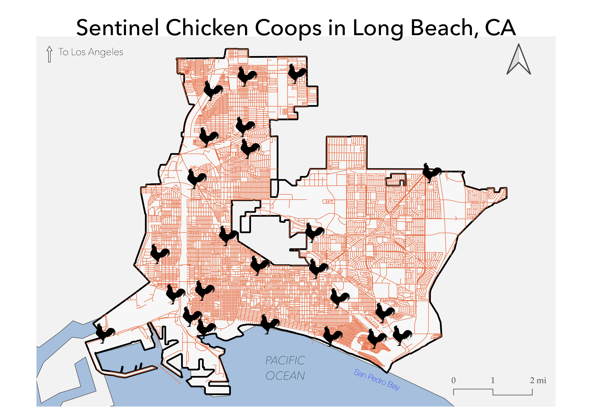

In this first project, students are asked to create a thematic map using GIS data on their hometown.
Chicken Coops and Disease Prevention
Sentinel chicken programs allows public health officials to predict and prevent the spread of West Nile Virus.

Data used for this project
DataLB